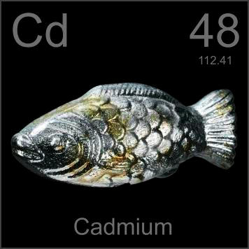

HOME
PREVIOUS
NEXT

Cadmium
Atomic Weight: 112.414
Density: 8.65 g/cm3
Melting Point: 321.07 °C
Boiling Point: 767 °C
Fish are not normally cast out of pure cadmium, but if you're making a periodic table poster, why not? The hint of yellow is a bit of cadmium oxide, a favorite pigment of the impressionist painters, notably Monet.